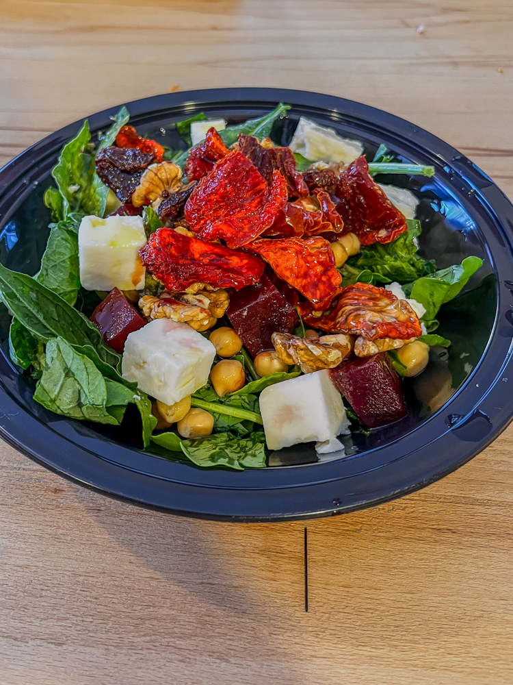
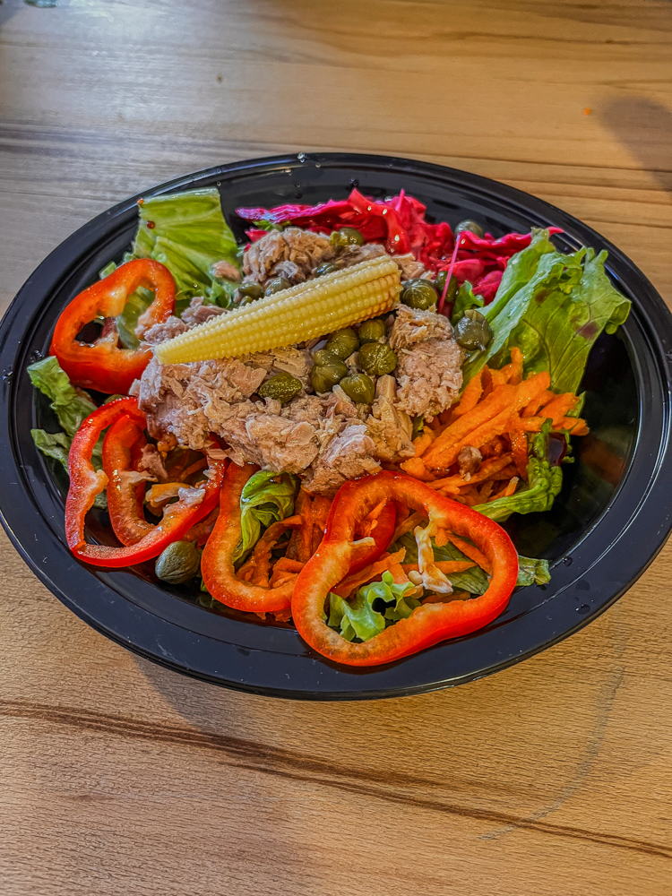
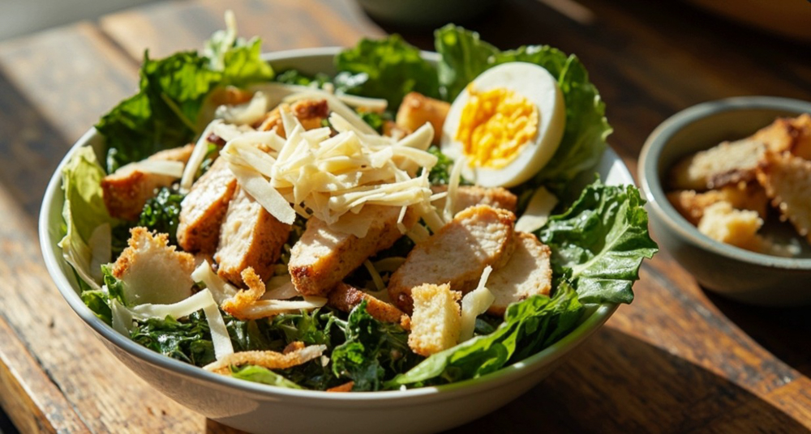
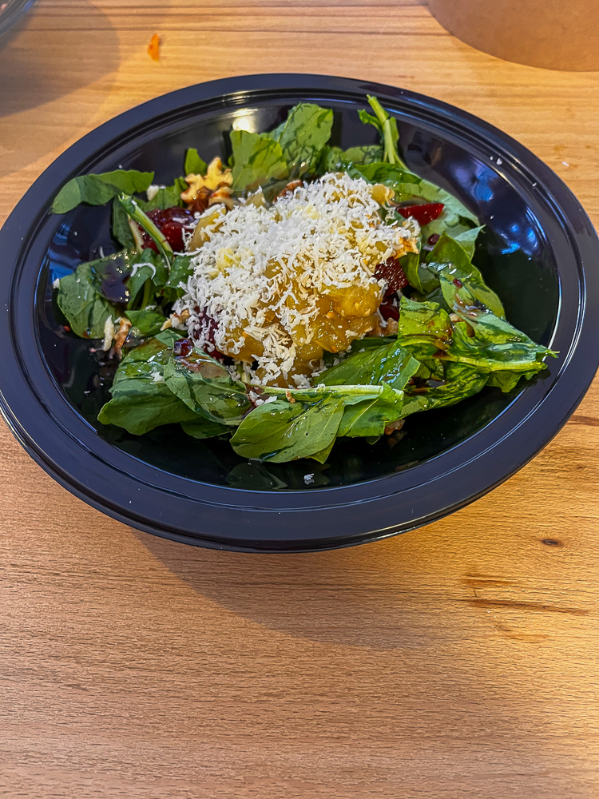
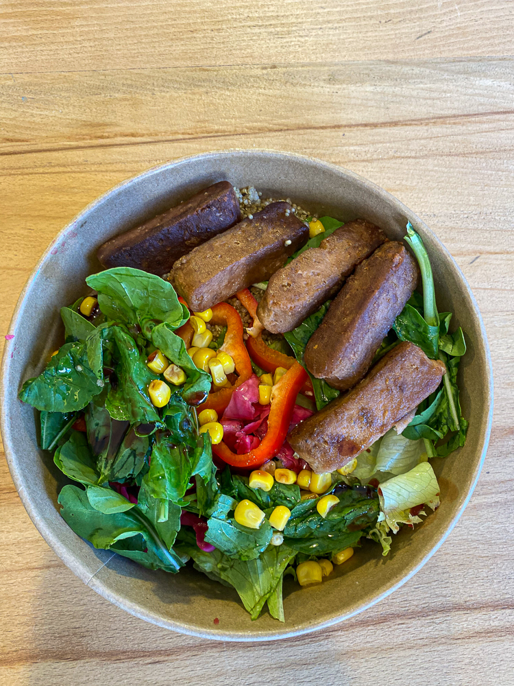

Roka, keçi peyniri, kuru domates, ceviz, zeytinyağı, balsamik sos ve ballı hardal

Marul, rende havuç, kapya biber, ton balığı, kapari, mor lahana turşusu, beybi mısır, galeta

Atom marul, dilim ızgara tavuk, kruton, rende parmesan peyniri, sezar sos

Roka, ıspanak, tulum peyniri, ceviz, pancar turşusu, nar ekşisi, zeytinyağı, köz patlıcan.

Marul, roka, domates, haşlanmış mısır, kapari, taze nane, zeytinyağı, hardal, vegan köfte